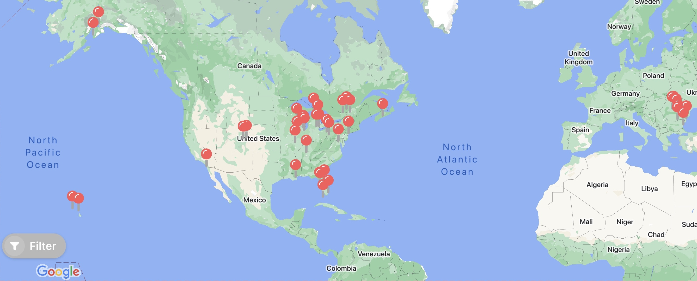

Hobbies
Chess
Chess is my favorite game to play in my downtime. I love the crazy gambits, endless calculation, and grueling endgames that make the game so dynamic and exciting! At the age of 5, I learned the basics of the game and rapidly progressed playing everyday with my grandpa. By the age of 8, I participated in my first chess tournament and won seventh place out of hundreds of players. I continued to play until middle school or age 11 when I finally became too busy with other activities to continue playing competitively, and therefore stepped away from chess for what would be almost 4 years. Fortunately, my love for the game was rekindled during the COVID-19 pandemic as the endless time during lockdown was the perfect opportunity to get back into the game. During my freshman year at Glenbrook South High School, I originally represented Board 6 of 8 but quickly surpassed my teammates within months to represent Board 4 of 8 at the state tournament where we took 4th place (in 2022) and 5th place (in 2023). (The board numbers are part of a ranking system to create fair matches where Board 1 from one school will play Board 1 from the other.) At the start of my freshman year, I created a LiChess account and found out that my blitz rating was a low 1200. Throughout the school year, my blitz rating grew to a high 1700, and in the summer going into my sophomore year started, my rating spiked to 2000. Enjoy browsing through my LiChess study above where I showcase some of my favorite games!
Digital Graphic Design
In my first year of high school, I took an amazing elective where I discovered a new interest: digital graphic design. I learned how to use Photoshop and Gravit to create incredible logos, fonts, portraits, clipart, and so much more. The applications of the skills taught in this class extend beyond the classroom to everyday life. Check out some of my projects in my portfolio!
Travel
I love to travel, and have visited 16 states (IL, MI, AK, FL, CO, HI, TN, LA, NY, PA, CA, IN, MO, DC, WI, OH) and 4 countries (US, Canada, Romania, Bulgaria) around the world. My hope is to someday visit all 50 states around the country, and travel in Western Europe to catch some soccer matches as well as to see some amazing history.
